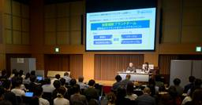
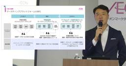
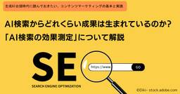

MarkeZine:新着一覧
https://markezine.jp/
翔泳社が運営するマーケター向け専門メディア。MarkeZineはデジタルを中心とした広告・マーケティングに関する情報を多角的な視点で毎日提供します。
フィード
BtoBコミュニティを事業成長のエンジンに変える NotionとSUPER STUDIOの実践知
MarkeZine:新着一覧
「BtoB Synergy FORUM 2026」のセッション「“つながり”を事業成長のエンジンに変える BtoBコミュニティ成功の力学」では、コミュニティ施策によって事業成長を推進する2社が登壇。AIコマースプラットフォーム「ecforce」を提供するSUPER STUDIOの真野 勉氏と、AIワークスペースツール「Notion」を提供するNotion Labs Japanでカスタマーサクセスマネージャーを務める濵岡 瑞希氏が、それぞれの実践知とコミュニティ運営の要所を語り合った。本稿ではその詳細をレポートする。
2日前

ロングセラーを再成長へ！雪印メグミルクに学ぶ「ブランドマネジメント組織」とリサーチ活用の裏側
MarkeZine:新着一覧
歴史あるロングセラーブランドが直面する「顧客の高齢化」や「コモディティ化」の壁。雪印メグミルクは、この課題を打破すべく2022年にマーケティング組織を刷新し、「６Ｐチーズ」などで過去最高売上を達成した。本記事では、特定の個人の手腕に依存するのではなく、組織全体で顧客理解を深め、意思決定へとつなげた「ブランドマネジメント体制の変革」と「ブランドチーム全員参加型のリサーチ活用」の仕組みに迫る。
2日前

イオンマーケティングが外部支援を本格化 レジクーポン刷新・新基盤「MIXT Platform」を発表
MarkeZine:新着一覧
イオンマーケティングは2026年9月18日、メディア事業に関する報道向け説明会を開いた。同社はこれまでイオングループの支援を主業としてきたが、今回、共通ポイント「WAON POINT」の顧客基盤と購買データを用いた分析をグループ外の企業へ本格的に提供する方針を打ち出した。9月に新方式へ刷新したリテールメディア「イオンレジクーポン」や、2027年春に本格提供を予定する新基盤「MIXT Platform」も発表。常務取締役の長島弘明氏の説明を基に、事業の全体像を整理する。
3日前

AI検索からどれくらい成果は生まれているのか？「AI検索の効果測定」について解説
MarkeZine:新着一覧
AI検索対策（LLMO）に取り組む企業が増える一方で、「その成果をどう測るか」は非常に難しい問題になっている。AI検索では、ユーザーはAIと対話を繰り返すことでサービス選定を行っており、事業者側からその内容を確認することはできないためだ。このような状況で、AI検索からの成果をどのように確認し、評価すれば良いのか。ナイル株式会社でLLMO推進PJのリーダーを務める細山氏が解説する。
3日前

センスをAIに外注するな。HubSpot CMOが語るゼロクリック時代の新戦略
MarkeZine:新着一覧
快晴のボストンで、HubSpotの年次カンファレンス「UNBOUND 2026」は2日目を迎えた。この日、MarkeZine編集部は「AI Broke The Old Marketing Playbook. Here's What Replaces It（AIが従来のマーケティング戦略を覆した。それに代わるものとは？）」と銘打たれたセッションを聴講。HubSpot CMOのキップ・ボドナー氏が、長年の相棒であるキーラン・フラナガン氏とともに、新戦略を語る内容だ。本稿の前半ではセッションの一部をレポートし、後半ではボドナー氏に行った個別インタビューの内容を掲載する。
4日前